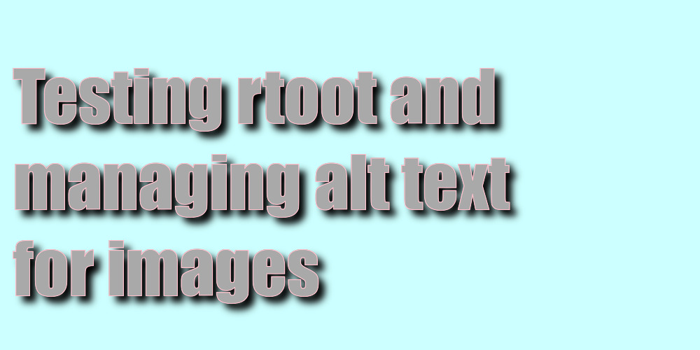

Testing rtoot and managing alt text for images
mastodon
rtoot
alt text
midjourney
generative art
I’m trying the new rtoot package to interact with mastodon using the API. And, I’m practicing adding alt text to images that I will likely re-use.
Expertise: Not much | Usefulness: decent | Audience: notes to self
Using mastodon has prompted me to get in the habit of adding alt text to images in my posts. On the one hand, mastodon makes it easy to add alt text to images, and on the other hand I’ve noticed that adding alt text can be very cumbersome especially when many images are involved, and I have plans to repost them. My understanding, at least the way I’m doing it, is the alt text has to be entered every time you post an image.
I tried downloading an image that I posted with alt-text, and then re-posting it to see if the alt-text was preserved, but it was not. I was hoping mastodon might take the alt-text and embed it into the EXIF image data, and/or automatically scrape EXIF image data and use it for alt-text. This functionality is currently a feature request over at github issues.
In the meantime, I have a case where I’d like to automate the alt-text process for 13+ images. Over the weekend I used midjourney to generate fake album cover art for some basement tape tracks I’m working on. I posted each track on the homphony timeline and for each cover art image I uploaded alt text containing brief descriptions of the image, and the midjourney prompt that I used to create the image. After a morning of fun doing this I wanted to post all of the pictures with alt-text together on my art focused account. However, I would have to manually add all of the alt-text all over again to all of the images. I didn’t do that because I didn’t have time to do that. And, I wasn’t thinking ahead about digital asset management, so I didn’t adopt a process that would allow me to repost with the images with alt-text.
This post should help me with two things. I’m going to try out the new R API client for mastodon called rtoot, and I should be able to download posts, images, and alt text from one account, and then repost them with alt text to another account.
rtoot
I followed the instructions in the rtoot vignette to get my authentication set up.
Can only get 20 statuses.
References
Bache, Stefan Milton, and Hadley Wickham. 2022. Magrittr: A Forward-Pipe Operator for r. https://CRAN.R-project.org/package=magrittr.
Ooms, Jeroen. 2021. Magick: Advanced Graphics and Image-Processing in r. https://CRAN.R-project.org/package=magick.